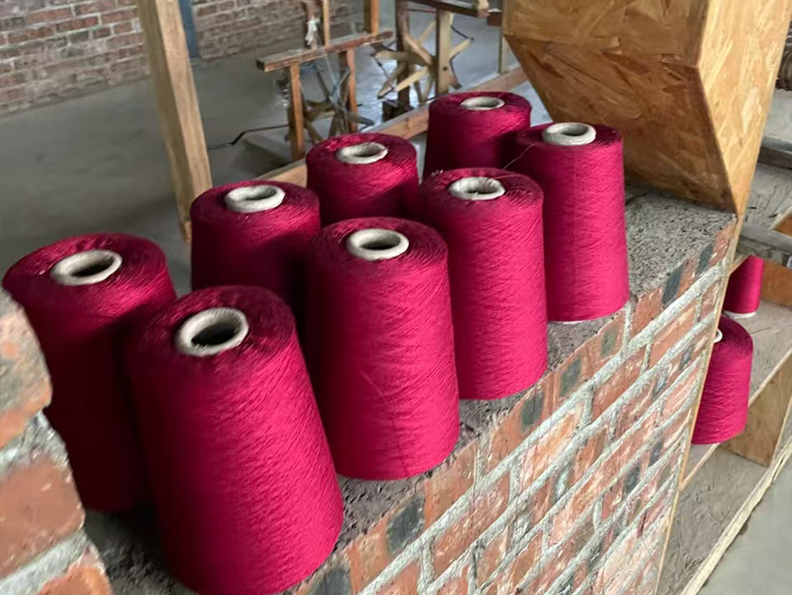
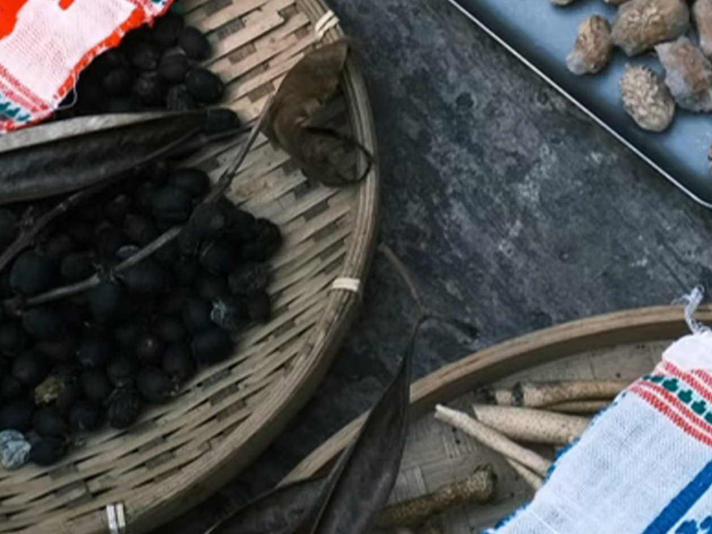
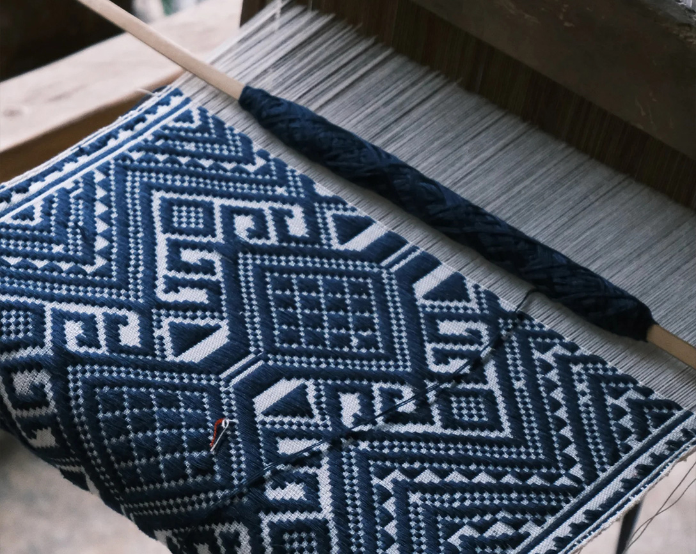
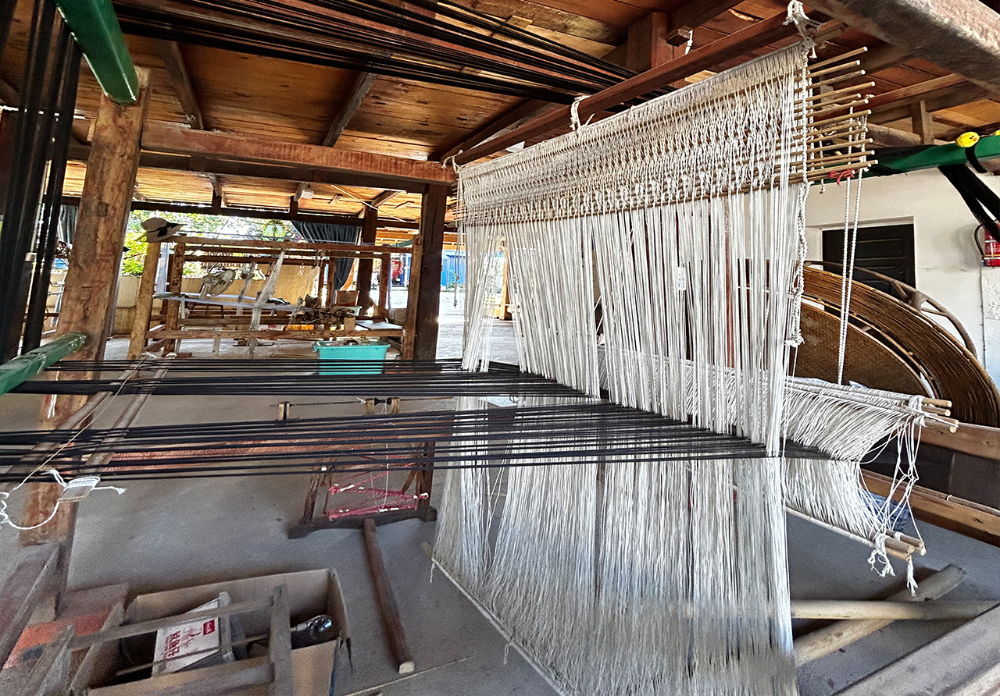
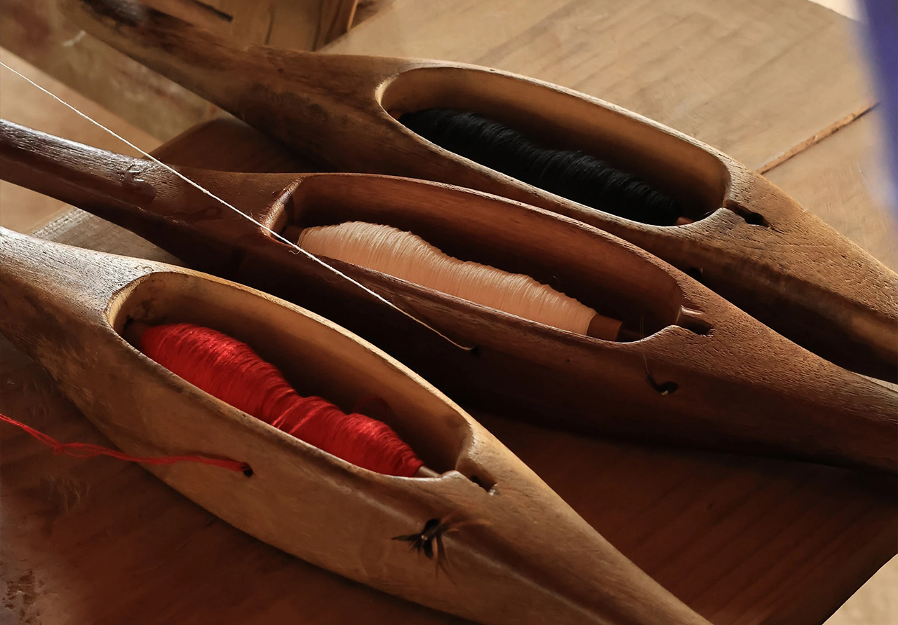
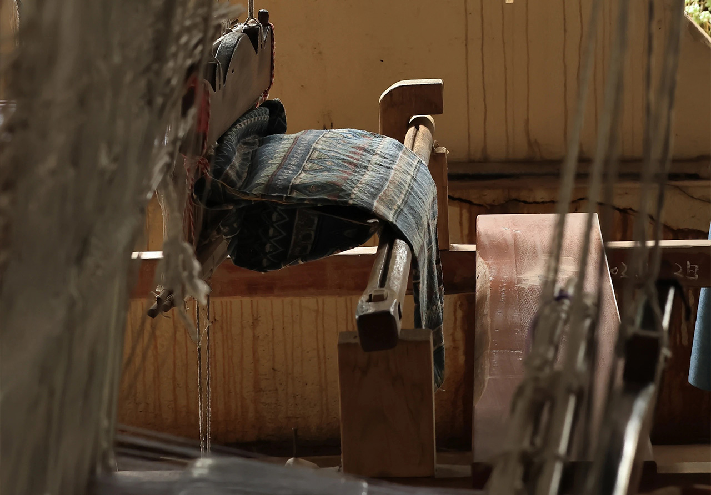

The Production Process Of Intangible Cultural Heritage
非遗傣族织锦的制作工艺
傣族织锦选用天然棉线、丝线为原料，部分传统工艺使用植物纤维。丝线需经过梳理、纺线、卷线等工序，让线体均匀细腻，为织造打下坚实基础，保证织锦质感细腻、牢固耐用。

采用傣族传统天然植物染色技艺，使用苏木、黄姜、板蓝根等植物提取染料，不添加化学制剂。通过浸泡、蒸煮、晾晒等步骤，让丝线染上自然色彩，色牢度高且环保健康，充满自然气息。

将染好的彩线按设计方案进行整经、排线，确定织锦的尺寸、纹样与色彩分布。匠人凭借经验手工排列经线，保证张力均匀，为腰机织造做好准备，是织锦图案成型的关键步骤。

成品需经过严格检验，检查纹样完整性、线体牢固度与色彩均匀度，匠人对瑕疵处进行修补整理。最终完成的傣族织锦色彩绚丽、纹样精美，承载千年民族文化，是国家级非遗技艺的完美呈现。
Intangible Cultural Tool
傣族织锦的制作工具


